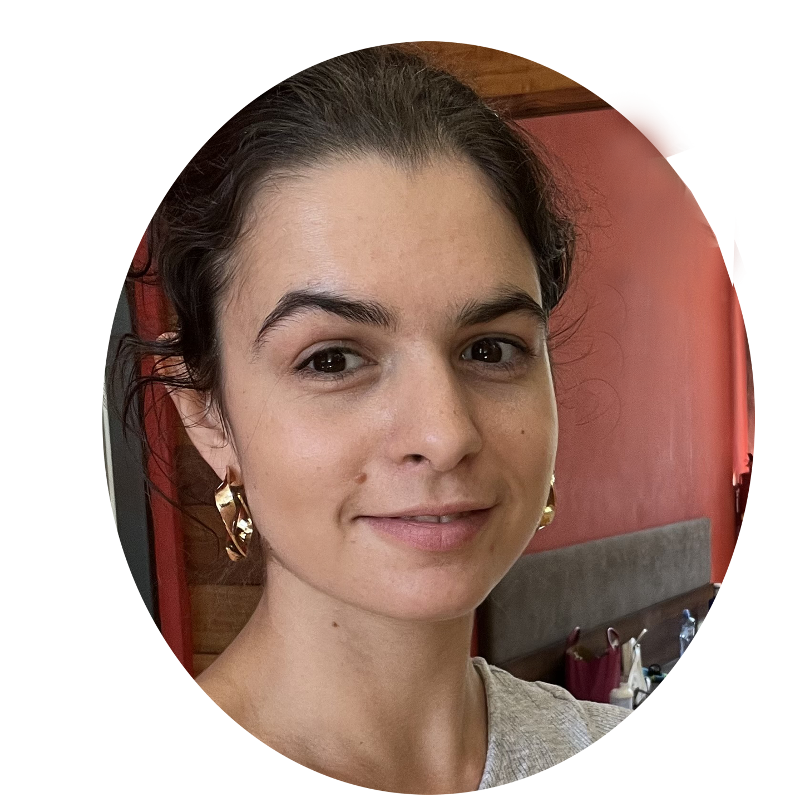

KONTAKT
Tel. číslo:
+420 776 072 271
E-mail:
zuzana.jarosova93@seznam.cz


JAZYKOVÉ ZNALOSTI
čeština: rodilý mluvčí
angličtina: středně pokročilý
španělština: základní
|
PŘEDCHOZÍ PRACOVNÍ ZKUŠENOSTI
16. leden 2024 – současnost
Administrativní podpora v ManpowerGroup s.r.o.
- Osobní a telefonická komunikace s klienty/kandidáty
- Práce na recepci
- Administrace smluv
- Příprava podkladů pro podepisování
- Zpracování dat do interního systému
prosinec 2023 – 15. leden 2024
Evidence na úřadě práce
květen 2022 – listopad 2023
Vedení týmu Quality Controllingu v RWS
- Koordinace práce zaměstnanců a brigádníků.
- Zajištění kvality lokalizovaných obrázků, dokumentů, e-learningů, reklamních bannerů,
videií, reklamních spotů
- Nábory nových lidí do týmu
- Vyhodnocování dat produktivit v excelu
- Zavádění nástrojů pro zefektivnění práce
srpen 2018 – květen 2022
Pozice Quality Controller (junior/standard/senior) v RWS Moravia
- Spolupráce s ostatními týmy v oddělení Publishing&Media
- Zajištění kvality lokalizovaných obrázků, dokumentů, e-learningů, reklamních bannerů,
videií,
reklamních spotů
- Péče o nové zákazníky: zajištění kvality
a zavedení procesů uvnitř oddělení
- Asistence team leadrovi s organizací týmu a včasných odevzdávek projektů
- Podílení se na testování nástrojů
k zefektivnění práce
- Zaškolování nových kolegů na projektech
|